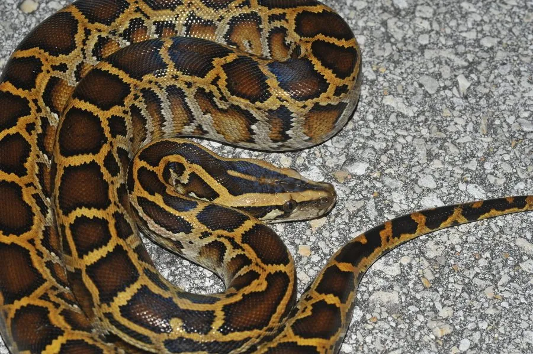

爬行动物 · 动物界
缅甸蟒 Python bivittatus

亚洲大型无毒蛇类，体长可超过 5 米，雌性明显大于雄性，靠缠绕绞杀猎物，是中国重点保护动物。
- 分类
- 门脊索动物门纲爬行纲目有鳞目科蟒科属蟒属
- 栖息环境
- 南亚与东南亚的热带森林、灌丛、沼泽及农田边缘
- 地理分布
- 印度、缅甸、泰国、越南及中国云南、广西、广东、海南等地
- 保护级别
- IUCN 易危（VU）；中国国家一级保护动物
物种志
缅甸蟒体躯粗壮，头颈分界明显，吻端有热敏感的唇窝，能感知恒温猎物的体温。体色以黄褐或灰褐为底，背部和两侧分布着形状不规则的暗褐色大斑块，斑块边缘镶黑边、中心浅黄，头部有箭头状斑纹；鳞片光滑而厚实，尾部短而粗。
它分布于南亚、东南亚及中国南方，栖息于热带与亚热带森林、灌丛和近水地带，喜欢潮湿隐蔽的环境，多在夜间活动，捕食鼠类、兔、鹿、鸟类等，捕到猎物后整只吞下，可数月不食。雌蟒每窝产卵约 20–100 枚，会盘在卵上通过肌肉颤动产生热量孵卵，孵化期约 60–90 天。因皮革贸易与宠物捕捉，野生种群数量下降，被列为易危；美国佛罗里达曾因放生个体形成入侵种群。
形态与习性
- 食性鼠类、兔、鹿、鸟类等，整只吞食
- 体长一般 3–5 m，最长记录约 5.8 m
- 体重可达 90 kg
- 寿命野外约 20–25 年
- 繁殖卵生，每窝 20–100 枚，孵化期 60–90 天，母蟒孵卵
- 活动节律夜行性，善游泳
- 防御以缠绕绞杀为主，无毒
趣味知识
- 缅甸蟒是世界上最重的蛇之一，人工饲养个体体重曾超过 180 kg。
- 雌蟒孵卵时会靠肌肉颤抖产热，使卵堆温度高于周围环境。
- 缅甸蟒头部有唇窝，可感知猎物散发的红外热辐射。